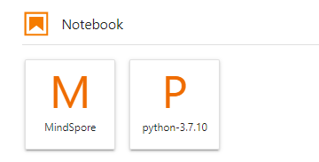
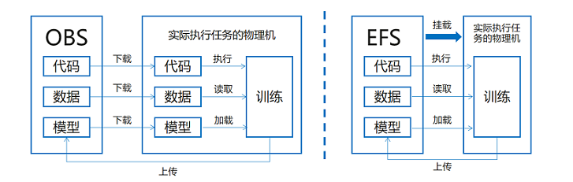

环境准备与资料获取

网络迁移首先需要配置MindSpore的开发环境，本章会详细描述安装过程与相关资料获取。相关资料包括对MindSpore组件models 与 Hub的基本介绍，包含用途、场景与使用方法。此外还有云上训练的相关教程：使用ModelArts适配脚本，在OBS上传数据集，进行线上训练等。
MindSpore安装
昇思MindSpore是一个全场景深度学习框架，目前支持在昇腾、GPU、CPU等多种device上运行。其中昇腾和GPU上安装MindSpore前需要配置好对应的运行环境。
MindSpore 昇腾支持AI训练（910）、推理卡（310与310P）及训练服务器等多种Atlas系列芯片上运行，注意MindSpore版本需要和昇腾AI处理器配套软件包配套使用，如MindSpore1.8.1 必须配套昇腾软件包商业版22.0.RC2版本或者CANN社区版5.1.RC2.alpha008版本，在其他版本可能会有问题，详情请参考MindSpore Ascend版本安装指南中的“安装昇腾AI处理器配套软件包”章节。
MindSpore GPU支持在Linux环境上CUDA 10.1和CUDA 11.1使用。NVIDIA官方给出了多种安装方式和安装指导，详情可查看CUDA下载页面和CUDA安装指南。
MindSpore CPU目前支持Linux，Windows和Mac。
在配套软件包安装齐全的基础上，再根据MindSpore安装指引，安装对应版本的MindSpore即可体验。
参考如下表格确定系统的发行版本、架构（X86或Arm）及Python版本。
系统 |
查询内容 |
查询命令 |
|---|---|---|
Linux |
系统发行版本 |
|
Linux |
系统架构 |
|
Linux |
Python版本 |
|
根据自己使用的操作系统及计算硬件，选择对应的MindSpore版本，通过Pip、Conda、Docker或源码编译等方式安装MindSpore，推荐访问MindSpore安装页面 ，并参考该网站指导完成安装并进行验证。
models 与 hub
MindSpore models 是MindSpore与社区共同提供的深度优化的模型集市，向开发者提供了深度优化的模型，生态中的小伙伴可以方便地基于ModelZoo中的模型进行个性化开发。当前已经覆盖了机器视觉、自然语言处理、语音、推荐系统等多个领域的主流模型。
目前有300+的模型实现，其中official目录下的网络是官方提供的网络，针对模型实现有一些优化；research目录下大多是众智的模型，精度和性能都有一定的保证；community目录是开发者贡献的代码，目前还没有进行维护，仅供参考。
MindSpore Hub 是存放MindSpore官方或者第三方开发者提供的预训练模型的平台。它向应用开发者提供了简单易用的模型加载和微调API，使得用户可以基于预训练模型进行推理或者微调，并部署到自己的应用中。用户也可以将自己训练好的模型按照指定的步骤 发布模型 到MindSpore Hub中，供其他用户下载和使用。
下载中心 保存了目前models仓里模型训练好的参数文件，用户可以在这里下载到对应的参数文件进行开发。
ModelArts
开发环境简介
ModelArts是华为云提供的面向AI开发者的一站式开发平台，集成了昇腾AI处理器资源池，用户可以在该平台下体验MindSpore。相关文档可参考AI开发平台ModelArts。
开发环境与训练环境
开发环境主要指Notebook的开发环境，主要用于代码的编写和调试，有着几乎和线下一致的开发体验，但是机器和核数相对较少，使用时间是受限的。

训练环境是云上的主要生产环境，机器和核数都比较多，适合大集群和批量任务。
开发环境存储方式介绍
开发环境支持的存储方式有OBS和EFS，如下图所示：

OBS：也叫做S3桶，在开发环境和训练环境中需要将存储在OBS上的代码、数据、预训练模型先传到对应的物理机上，之后才能执行作业。本地上传文件到OBS。
MoXing：MoXing是华为云深度学习服务提供的网络模型开发API，使用上需要重点关注数据拷贝的接口：
import moxing as mox
mox.file.copy_parallel(src_path, target_path) #将OBS桶中的数据拷到实际执行的物理机或者相反
EFS：可以理解为一块可挂载的云盘，在开发环境和训练环境中可以直接挂载到对应的物理机上，方便执行作业。
欢迎点击下面视频，一起来学习。